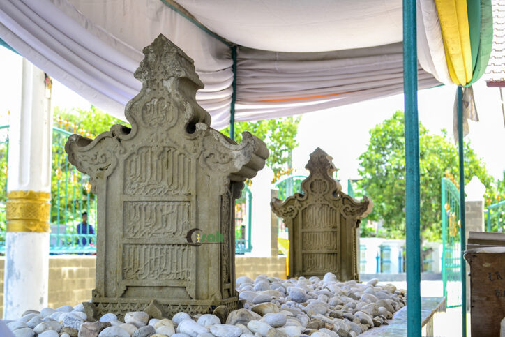

Abad ke-13 masehi (1201–1300 m) merupakan fase awal yang sangat penting dalam sejarah perkembangan Islam di Indonesia. Pada abad ini Islam mulai berkembang secara lebih jelas dan terorganisasi di wilayah Nusantara, khususnya di daerah-daerah pesisir yang menjadi pusat perdagangan internasional. Berbeda dengan abad-abad sebelumnya yang masih bersifat tahap perkenalan dan kontak awal, abad ke-13 menandai munculnya komunitas Muslim yang menetap serta terbentuknya kekuasaan Islam pertama di Indonesia. Perkembangan Islam di Indonesia pada abad ke-13 tidak terjadi secara tiba-tiba, melainkan merupakan hasil dari proses panjang interaksi perdagangan, sosial, dan budaya. Oleh karena itu, abad ke-13 dapat dipandang sebagai masa transisi penting dari tahap masuknya Islam menuju tahap perkembangan dan penguatan Islam di Nusantara.
Pada abad ke-13, jalur perdagangan Samudra Hindia telah berkembang pesat dan menjadi penghubung utama antara Timur Tengah, India, dan Asia Tenggara. Nusantara, yang kaya akan hasil bumi seperti rempah-rempah, menjadi tujuan penting para pedagang asing, termasuk pedagang Muslim. Kondisi ini menciptakan ruang interaksi yang intens antara pedagang Muslim dan masyarakat lokal. Islam diperkenalkan melalui hubungan dagang, perkawinan, serta kehidupan sosial sehari-hari. Proses ini berlangsung secara damai tanpa paksaan, sehingga Islam dapat diterima secara perlahan oleh masyarakat Nusantara.
Pada abad ke-13, penyebaran Islam di Indonesia berlangsung melalui beberapa jalur utama, yaitu jalur perdagangan laut melalui Samudra Hindia, jalur India khususnya Gujarat dan India Selatan, serta jalur Persia dan Arab. Di antara jalur tersebut, jalur Gujarat memiliki peran yang sangat besar. Hal ini terlihat dari kesamaan mazhab fikih yang berkembang di Indonesia, yaitu mazhab Syafi’i, serta bentuk-bentuk budaya Islam awal yang menunjukkan pengaruh India Muslim.
Pedagang Muslim merupakan aktor utama dalam perkembangan Islam di Indonesia pada abad ke-13. Mereka tidak hanya melakukan aktivitas ekonomi, tetapi juga menjadi teladan dalam perilaku dan etika kehidupan. Ciri utama peran pedagang Muslim antara lain menunjukkan etika dagang yang jujur dan adil, menjalin hubungan sosial yang baik dengan masyarakat lokal, serta menyebarkan Islam melalui keteladanan, bukan paksaan. Melalui peran ini, Islam diterima sebagai ajaran yang selaras dengan nilai-nilai lokal, sehingga proses Islamisasi berlangsung secara damai.
Selain pedagang, ulama dan tokoh tasawuf memiliki peran penting dalam perkembangan Islam di Indonesia pada abad ke-13. Pendekatan tasawuf yang menekankan akhlak, spiritualitas, dan toleransi budaya sangat sesuai dengan karakter masyarakat Nusantara. Para sufi menyebarkan Islam dengan cara mengakomodasi tradisi lokal dan memberikan makna baru yang Islami. Pendekatan ini memudahkan masyarakat untuk menerima Islam tanpa harus meninggalkan seluruh tradisi yang telah ada sebelumnya.
Salah satu bukti penting perkembangan Islam di Indonesia pada abad ke-13 adalah berdirinya Kerajaan Samudra Pasai di Aceh. Kerajaan ini sering dianggap sebagai kerajaan Islam pertama di Indonesia. Bukti keberadaan Samudra Pasai antara lain batu nisan Sultan Malik al-Saleh bertahun 1297 m, catatan perjalanan Marco Polo yang menyebutkan adanya komunitas Muslim di Sumatra, serta kenyataan bahwa Islam pada masa ini tidak hanya dianut oleh individu, tetapi telah berkembang menjadi kekuatan sosial dan politik.

Perkembangan Islam pada abad ke-13 membawa perubahan dalam kehidupan sosial dan budaya masyarakat Nusantara. Nilai-nilai Islam mulai memengaruhi sistem kepercayaan, norma sosial, dan kehidupan sehari-hari. Namun, proses ini berlangsung melalui akulturasi budaya. Unsur-unsur Islam berpadu dengan tradisi lokal, sehingga membentuk corak Islam Nusantara yang khas dan beragam.
Abad ke-13 menempati posisi yang sangat penting dalam sejarah Islam Indonesia. Pada masa inilah Islam mulai berakar kuat dan menunjukkan keberadaannya secara nyata di Nusantara. Perkembangan yang terjadi pada abad ke-13 menjadi dasar bagi penyebaran Islam yang lebih luas pada abad-abad berikutnya, khususnya pada abad ke-14 dan ke-15 ketika Islam berkembang pesat di Jawa dan wilayah Indonesia lainnya.
Perkembangan Islam di Indonesia pada abad ke-13 merupakan fase awal yang menentukan dalam sejarah Islam Nusantara. Melalui jalur perdagangan, peran pedagang Muslim, ulama, dan pendekatan tasawuf, Islam berkembang secara damai dan bertahap. Abad ke-13 menjadi tonggak penting karena pada masa inilah Islam mulai membentuk fondasi sosial, budaya, dan keagamaan yang kelak berkembang.